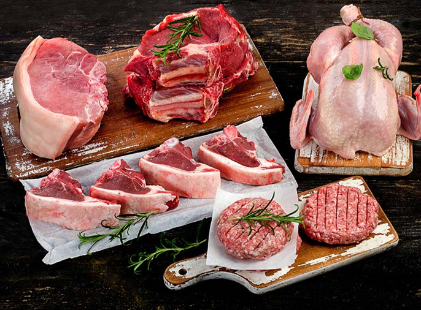
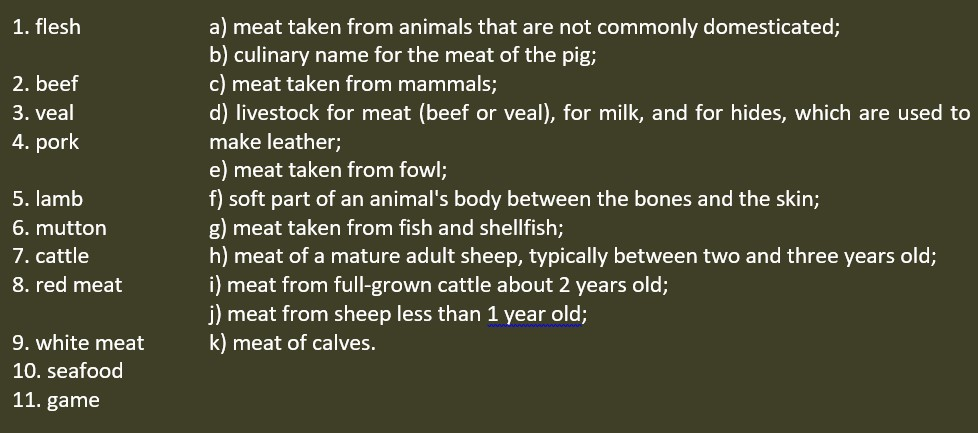

Lesson 13
UNIT 3
Livestock processing technology
BASIC PROCESSING TECHNOLOGIES OF ANIMAL PRODUCTS

Types of meat
Learn the active vocabulary of the Lesson and be ready to use it in your further work:
Flesh
n – м’ясо;
muscular
tissue – м’язова тканина;
connective
tissue – сполучна тканина;
tendons
n – сухожилля;
lean
meat – пісне м’ясо;
food
value – поживна цінність;
satiety
n – насичення;
palatable
adj – смачний,
приємний
на
смак;
cattle
n
– велика рогата худоба;
beef
n
– яловичина;
veal
n
– телятина;
pork
n
– свинина;
lamb
n
– ягня;
mutton
n
– баранина;
bone
n
– кістка;
gland
n
– залоза;
edible
organs
– їстівні органи (у тварин);
carcass
n
– туша;
fibre
n
– волокно;
cell
n
– клітина (біологічна);
extractives
n
– екстракт;
texture
n
– тканина;
digest
v
– перетравлювати, засвоювати (про їжу);
skin
n
– шкіра;
albumin
n
– альбумін (білок);
gelatin
n – желатин;
blood
n – кров;
liver
n – печінка;
kidney
n – нирка;
glandular
tissues
– залозні тканини;
sweetbread
n
– солодке м’ясо;
glycogen
n
– глікоген (тваринний крохмаль);
preservation
n
– зберігання, консервування;
canning
n
– консервування;
curing
n
– засолювання;
cooling
n
– охолодження;
drying
n
– сушіння;
freezing n – заморожуванняRead and translate the texts:
TYPES
OF MEAT
Meat
is the common term used to describe the flesh or other edible parts of animals
(usually domesticated cattle, swine, and sheep) used for food, including not
only the muscles and fat but also the tendons and ligaments. Processed or
manufactured products prepared from animal tissues are also called meat.
Containing all the amino acids necessary for the human body, meat is valued as a
complete protein food. Parts such as livers, kidneys, hearts, and other portions
are excellent sources of vitamins and of essential minerals.
Meat
digests slowly, but 95 percent of meat protein and 96 percent of the fat are
digested. Meats are often classified by the type of animal from which they are
taken. Red meat refers to the meat taken from mammals; white meat refers to the
meat taken from fowl; seafood refers to the meat taken from fish and shellfish;
and game refers to meat taken from animals that are not commonly domesticated.
In addition, most commonly consumed meats are specifically identified by the
live animal from which they come. The most widely consumed meat is beef, the
flesh of mature cattle that normally weigh from 450 to 540 kg. Beef is flesh of
mature cattle, as distinguished from veal, i.e. the flesh of calves. The best
beef is obtained from early maturing, special beef breeds. The primary
beef-consuming countries of the world (in per capita terms) are Uruguay,
Argentina, New Zealand, Australia, and the United States. Beef is not
particularly popular in most of Southeast Asia, Africa, and the Indian
subcontinent; the sanctity of the cow in the Hindu religion forbids the
consumption of its meat by the Hindus. Beef is not unusual in the cuisines of
Korea and Japan, however; in Japan, near Osaka, a highly prized beef is produced
from cattle that are vigorously massaged and fed a liberal dietary supplement of
beer.
Veal,
the flesh of calves of cattle, is much less fatty than beef. Veal is meat of
calves
slaughtered between 3 and 14 weeks. Although the meat of an animal from 15 weeks
to one year is technically called calf, it is frequently marketed as veal.
Pork
is flesh of hogs, usually slaughtered between the ages of six months and one
year. About 30 percent of the meat is consumed as cooked fresh meat. Pork is one
of the most popular types of meats and is consumed around the world. However, it
is prohibited by the dietary laws of Judaism and Islam, so pork is virtually
unknown in the cuisines of the Middle East and those of some local populations
in Asia and Africa. The chief pork-consuming countries are Germany, Denmark,
Poland, and Austria.
Lamb
is live sheep before the age of one year, and the flesh of such animals.
Mutton
refers to the flesh of the mature ram or ewe at least one year old; the meat of
sheep between 12 and 20 months old may be called yearling mutton. The meat of
sheep 6 to 10 weeks old is usually sold as baby lamb, and spring lamb is from
sheep of five to six months. The primary lamb- and mutton-consuming countries
are New Zealand, Australia, Greece, Uruguay, and Ireland.
The
usual methods of preserving meat from bacteria and decay are refrigerating,
freezing, curing, freeze-drying, and canning.
Chemistry
and nutrient composition of meat.
Regardless
of the animal, lean muscle usually consists of approximately 21 percent protein,
73 percent water, 5 percent fat, and 1 percent ash (the mineral component of
muscle). These figures vary as an animal is fed and fattened. Generally, as fat
increases, the percentages of protein and water decrease.
Vitamins
and minerals.
Meat
contains a number of essential vitamins and minerals. It is an excellent source
of many of the В vitamins, including thiamine, choline, В 6, niacin, and folic
acid. Some types of meat, especially liver, also contain vitamins
A, D, E, and K. Meat is an excellent source of the minerals, iron, zinc, and
phosphorus, a number of essential minerals, such as copper, molybdenum, nickel,
selenium, chromium, and fluorine having been found in meat as well.
Cholesterol.
Cholesterol is
a constituent of cell membranes and is present in all animal tissues. Leaner
meats typically are lower in cholesterol. Veal, however, is an exception: it is
lower in fat than mature beef but has significantly higher cholesterol levels.
Carbohydrates.
Meat
contains virtually no carbohydrates. This is because the principal
carbohydrate to be found in muscle, the complex sugar glycogen, is broken
down
in the conversion of muscle to meat. Liver is an exception, containing up to 8
percent carbohydrates.
Water.Water is the most abundant component of meat. Lean young veal may be as much as 80 percent water, while fully fattened beef may be as little as 50 percent. Because water is lost when meats are cooked, the percentages of protein and fat in cooked meats are usually higher than in the raw counterparts.
GRAMMAR
EXERCISES
I.
Answer the following questions:
1.
What is meat?
2.
What kinds of meat do we find in the market?
3.
What does meat contain?
4.
Does meat contain carbohydrates?
5.
What countrie are the primary beef-consuming countries of the world (in per
capita terms)?
6.
What can we call the flesh of calves of cattle?
7.
What can we call the flesh of hogs?
8. What the main pork-consuming countries are?
II. Give your arguments on the following, using the prompts in brackets:
– pros and cons of a vegetarian diet (healthy and useful
meals; protest against
animal
abuse; preventing from gaining an extra weight).
– advantages and disadvantages of ultrafashionable
low-caloric diets (the role of proteins and vitamins in daily human diet; widely
spread anti-obesity compaign in
Europe and the USA; junk food and its harmful effect on our lifestyle.
III. Match the words with their corresponding definitions:

IV. Put the Infinitives in brackets in the Present Continuous Tense:
1. Tonight we (to go) to restaurant to taste the French baked meat.2. The hogs (to slaughter) right now as their weight has reached 100 kg. 3. My Indian guests (not to eat) pork because of their traditional diet. 4. Cooks (to invent) various dishes containing beef, mutton or pork offal this evening. 5. Universal quality standards for producers of different countries (not/to develop) at present. 6. At present the variation of hamburger known as the cheeseburger (to become) popular on fast-food restaurant menus. 7. Due to the scientific advances nutrient composition of meats (to study) currently in detail.
V.
Find in the text and write out the sentences in the Present Indefinite Passive
Tense. Form these sentences into the Present Continuous Passive
Tense.
VI. Make the following sentences interrogative and negative:
1. Lamb is the most favourite meat in Greek and Turkish cuisines. 2. Offal is sometimes higher in minerals, vitamins, and proteins than muscle tissue. 3. In the US variety meats are associated not as more often with urban as with rural cookery. 4. Offal can be consumed either directly as food or processed into other products. 5. Pig is known to be the second largest provider of meat after cattle. 6. The strongest the flow of saliva and gastric juices, the easiest the digestion. 7. Both lamb and mutton are highliest valued in New Zealand as well as in Australia and Britain.
VII. Express the main idea of the texts in the shortest possible way:
GENETICALLY
MODIFIED ORGANISMS (GMO)
Genetic
engineering, genetic modification (GM) and gene splicing are terms for the
process of manipulating genes, usually outside the organism’s normal
reproductive process.
It
involves the isolation, manipulation and reintroduction of DNA into cells or
model
organisms, usually to express a protein. The aim is to introduce new
characteristics or attributes physiologically or physically, such as making a
crop resistant to herbicide, introducing a novel trait, or producing a new
protein or enzyme.
Examples
can include the production of human insulin through the use of modified
bacteria, the production of erythropoietin in Chinese Hamster Ovary cells, and
the production of new types of experimental mice such as the OncoMouse (cancer
mouse) for research, through genetic redesign.
Since
a protein is specified by a segment of DNA called a gene, future versions of
that protein can be modified by changing the gene's underlying DNA.
One
way to do this is to isolate the piece of DNA containing the gene, precisely
cut
the gene out, and then reintroduce (splice) the gene into a different DNA
segment.
Daniel
Nathans and Hamilton Smith received the 1978 Nobel Prize in physiology or
medicine for their isolation of restriction endonucleases, which are able to cut
DNA at specific sites. Together with ligase, which can join fragments of DNA
together, restriction enzymes formed the initial basis of recombinant DNA
technology.
Applications.
The first Genetically Engineered drug was human insulin approved by the USA's
FDA in 1982. Another early application of GE was to create human growth hormone
as replacement for a drug that was previously extracted from human cadavers. In
1986 the FDA approved the first genetically engineered vaccine for humans, for
hepatitis B. Since these early uses of the technology in medicine the use of the
GE has expanded to supply many drugs and vaccines.
One
of the best known applications of genetic engineering is that of the creation of
genetically modified organisms (GMOs).
There
are potentially momentous biotechnological applications of GM, for example oral
vaccines produced naturally in fruit, at very low cost.
A radical ambition of some groups is human enhancementvia genetics, eventually by molecular engineering. DNA sequencing is a technique which is used to identify each base in DNA.
VIII. Make up word combinations using the text:
|
1.
Human 2.
Restriction 3.
Reproductive 4.
Medical 5.
Homo 6.
Novel 7.
Molecular 8.
Modifie 9.
Deoxyribonucleic 10.
Express |
а)
sapiens; b)
genome; c)
trait; d)
engineering; e)
process; f)
research; g)
acid; h)
a protein; i)
bacteria; j)
endonuclease. |
IX.
Give definitions of the following words and word combinations:
Genome,
genetically modified organism,
DNA sequencing, model
organism,
restriction endonuclease.
1.......is
a species that is extensively studied to understand particular biological
phenomena, with the expectation that discoveries made in the organism model will
provide
insight into the workings of other organisms;
2.
.... is the process of determining the nucleotideorder of a given DNA fragment,
called the DNA sequence. Currently, almost all DNA sequencing is performed using
the chain termination method, developed by Frederick Sanger;
3.
......... is an organism whose genetic material has been altered using
techniques in genetics generally known as recombinant DNA
technology;
4.
...... is an enzyme that cuts double-stranded DNA. The enzyme makes two
incisions,
one through each of the phosphate backbones of the double helix without damaging
the bases;
5. ....... is
the complete set of genetic information of an organism including DNA and
RNA.
X.
Make up the sentences:
1.
flesh / food / that / is / is eaten / Meat / animal / as food.
2.
the type / often / Meats / are / of / classified / animal / by.
3.
refers to / from / Game / animals / meat / commonly / taken / that /domesticated
/ are not.
4. and cultures / important / to / Meat / industry, / around / is / the food / economies, / the world.